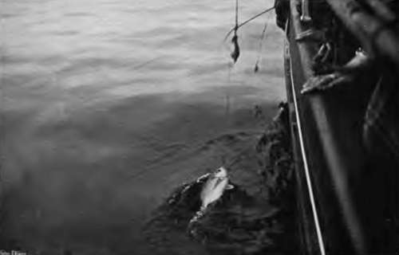

Chapter XXVII. Sea-Fishing From Boats: Pollack Fishing
Description
This section is from the book "Fishing", by Horace G. Hutchinson. Also available from Amazon: Fishing.
Chapter XXVII. Sea-Fishing From Boats: Pollack Fishing
Bass and pollack are, in fact, the other fish caught by the methods already recommended for mackerel, though with heavier tackle in proportion to their greater size and strength. In fishing for them with moving baits, however, the rowing-boat is not only the better craft, but it is the only one, for the additional strain of such heavy fish would be too great on lines moving rapidly after sailing-boats.
As it is, the mackerel fisher now and then loses all his finer gear at the end of the main line by a prowling pollack taking a fancy to the bait. Moreover, the sailing-boat, apart from the disadvantage above named, has another drawback; it moves too fast for, at any rate, the pollack, which, though a predatory fish, makes its raids in somewhat leisurely fashion. Whiffing for bass or pollack, then, must be done from a rowing-boat. The only alternative is a motor launch, the speed of which can be made as slow as is required without any reference to the wind. It will be said that a sailing-boat can also be sailed slow, which in a measure is true. But a sudden puff of wind may put a correspondingly sudden strain on the line at the very moment when there is a heavy fish at the other end, and the result of such a combination would inevitably be disaster.
There are parts of the coast, as in the deep water off the Lizard, where this method of catching bass is in favour, and there, I believe, it yields excellent results. It has not, however, come my way, and my preference when writing on these matters is to describe them at first hand. Whiffing for one large fish is much the same as whiffing for another, nor, indeed, save in the employment of stronger tackle and larger hooks, does it appreciably differ from whiffing for small fish. Virtually, then, what has been said of whiffing for mackerel applies for the most part to the capture of bass or pollack by the same method. The only important distinction is that the bass is a fish of quicker movements than the pollack, and it also feeds, as a rule, nearer to the top of the water. This being the case, the bait must move more quickly for bass than for pollack, and also nearer to the surface. The way to increase the speed of the bait is obviously to increase that of the boat. The regulation of the depth at which it moves through the water is a somewhat more complex arrangement, depending as it does on several co-related conditions. Other conditions being equal, the heavier the leads on the line the deeper it would sink. With the leads a constant factor, it would sink deeper as the boat went slower. Any one who has hauled in a leaded line behind a boat that moves knows that the lead comes to the surface as it is hauled faster. Lastly, if the other two conditions, the speed of the boat and the weight of the leads, are equal, the bait will sink lower in proportion as a greater length of line is let out. There are, therefore, these three methods of keeping the bait at the greater or lesser depth : putting more or less lead on it; rowing the boat faster or slower; and letting out a longer or a shorter line.
Where the pollack run large, that is to say anything over 6 or 8 lbs., a short spinning rod and trace of twisted gut will be found advisable, and with this the Nottingham reel is a boon. With smaller pollack, however, where the largest fish is 5 lbs., more sport will be had out of a trout-rod and bronze winch as recommended for mackerel, only the winch should hold at least eighty yards of line, as the first downward rush of even a 5-lb. pollack makes considerable demands on fine gear. The advantage of the Nottingham winch, even where it is not necessary to cast from it in the approved way, is that the- line runs out freely, whereas any one using the check bronze winch has to pull line off until there is as much out as required.
In whiffing for pollack a knowledge of the ground over which you are rowing is necessary, for these fish are found over rocks only. To some extent also this applies to whiffing for bass, but the bass, like the mackerel, also feeds on the sand. It is, of course, in fishing at anchor that this knowledge of grounds, or "marks," is of paramount importance. In whiffing, after all, the boat moves over a deal of water, and if the fish are not found in one place, they will be in another. When at anchor, however, an even slight mistake may be fatal to success, for the fisherman may, without any warning sign beyond his ill-luck, be patiently dangling baits over one spot while the fish are congregated and hungry on another not fifty yards distant. If the current sets from the fisherman's boat to them, there is some chance of the oily particles from his bait floating along the tide and attracting the fish to his hooks; but if, on the other hand, the current flows from the fish past the hooks, the case is hopeless.
However, the local fishermen generally know these marks pretty well, and they need not be too strictly adhered to in whiffing so long as the boat is over rocky ground. The great art of this whiffing, particularly when the pollack are feeding deep, is to keep the bait just on the move without getting it hung up in. the rocks. When the ledge is a fiat one, modelled on a coral reef, the difficulty is not great; but when the rocks are uneven and are, moreover, thickly grown with " boot-lace" weed, the chances of a foul are considerable. A few lobster pots in the neighbourhood, with their attendant corks and ropes, afford the fisherman additional opportunities of showing the skill with which he can manoeuvre his hook clear of such obstacles.
70.- Sea Bream Fishing Off The Eddystone.
So far much has been said of the tackle and mode of fishing, and nothing of the baits. These may be either natural or artificial. The choice rests with the angler, and depends on various conditions. One of these is the absence of live bait. In that case the angler obviously either uses artificial or stays ashore. When live bait, particularly the living sand-eel, is to be had, it always takes precedence with me over the most cunning artificial baits ever modelled, though I have had excellent sport with the Plymouth band baits and with the rubber eel, and there are numbers of pollack fishers, who probably know a good deal more of the fish than I do, who prefer the artificial baits at any price. There is this difference, of course, that the rubber baits must, to give them a proper spin, be towed behind the boat, whereas the living sand-eel can be paid out on the tide, its natural movements giving it an attractive spin in the water, while the boat is only just kept moving with an occasional dip of the paddles. It may perhaps be objected that this method is not whiffing, but approximates rather to the drift-line method already described.
Continue to: